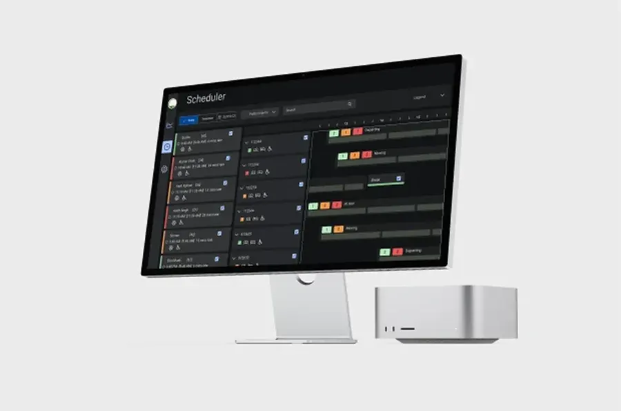
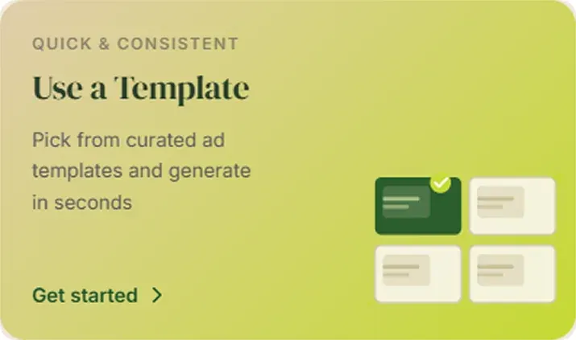
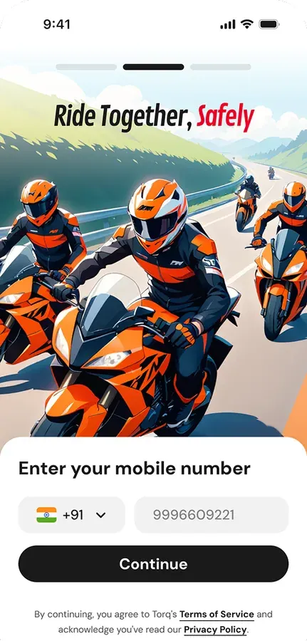
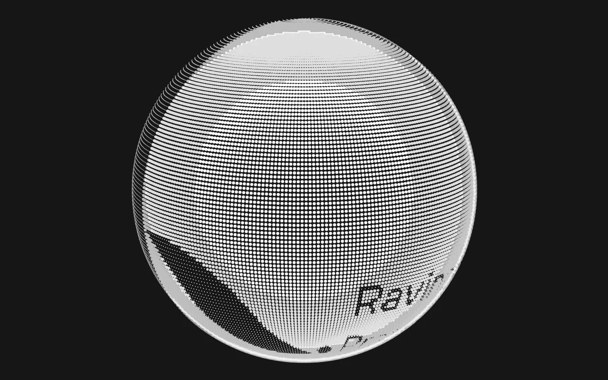
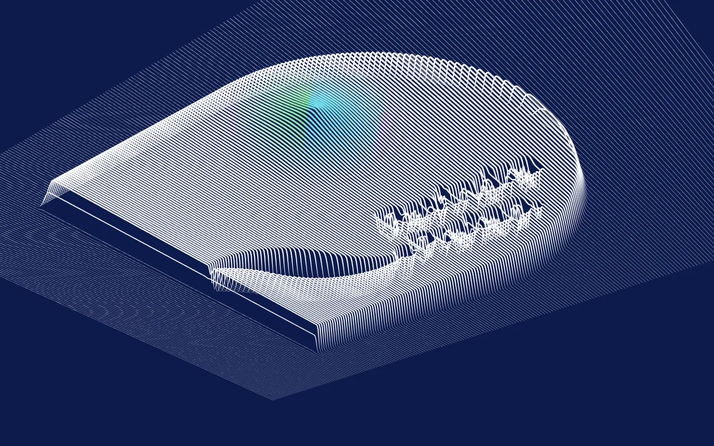
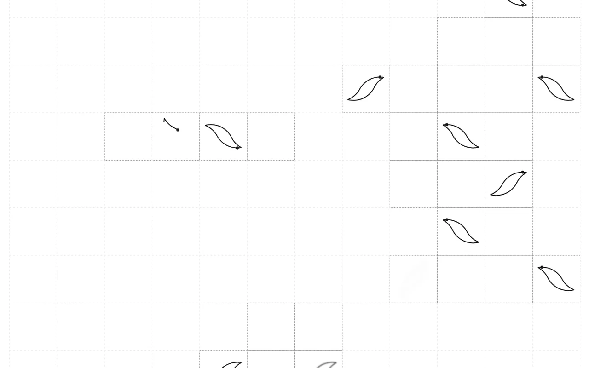
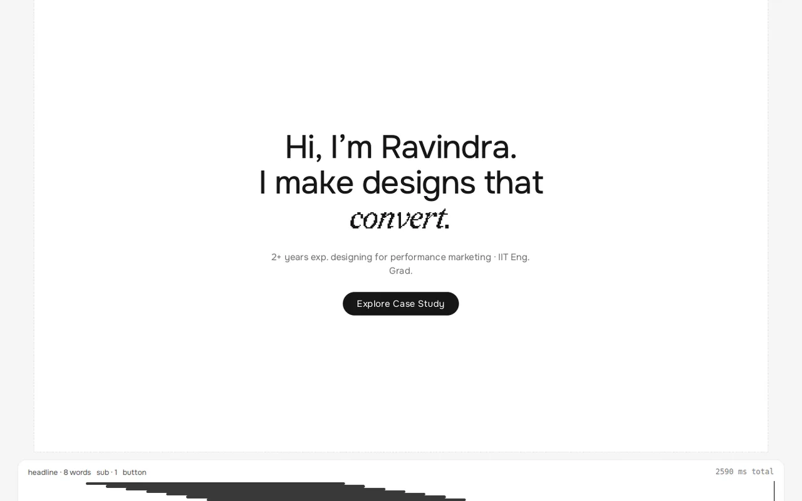
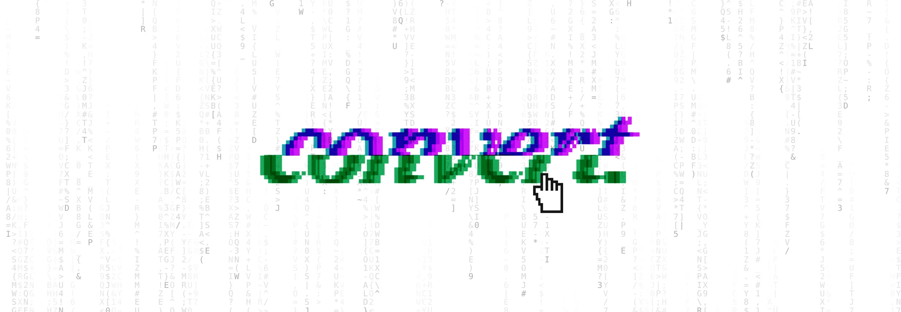

.fig.dark - the one inverted surface, for specimens that are themselves dark. Captions switch to --mut-inv (5.4:1).

.fx-wrap holds the particle-field case illustrations: 4:3, --r-lg, a --line-2 hairline on paper. Images inside step down to --r-sm.

--r-device and the screen follows via calc(var(--r-device) - 2px)..pbar) shows how far through the screen the reader has scrolled..wire bars so a screenshot never floats in an empty phone.object-fit:cover at a fixed width, so the morph only uncovers the top and bottom - it never zooms.One <dialog class="lb"> is created on first use and reused. The caption comes from data-caption, falling back to the alt text.
resume.pdf in a new tab..is-tucked slides it up 100% (border included); :focus-within brings it back so keyboard focus is never stranded.32px tall - deliberately under the type scale so the lockup reads as one mark - with a 44px hit area. It dims to 60% on hover; pure black artwork cannot recolour. On the home page it is centred and hidden under the closing grid, uncovered only by the overscroll stretch.
2+ years exp. designing for performance marketing · IIT Eng. Grad.
max-width:13ch + margin-inline:auto: the measure decides the line breaks, the auto margins centre it.<button> that inherits the h1's type - keyboard-reachable, read as a word.position:absolute, never a second flex child, or it pushes the h1 up and the loader stops landing on it.#content (z 25, opaque paper) slides up over the hero (z 10), so Selected work covers it.A glitch tear on "convert.", a pixel hand that presses it and a field of code rain - once at 1.2s, then every 5s, killed for good by the first click, never scheduled under reduced motion. Tune it in the Glitch tool.
The section label has no number and no counterweight - the hairline is the one piece of chrome still doing work.
A single product page that had to sell an eye-care supplement to cold traffic.

1fr 1.05fr, gap 64; .flip puts the visual first on alternate rows.Three columns, two at 900, one at 640 - two columns at phone width leaves a ragged orphan.
.lead goes on the first tile only.<i> sublabels - the span is body copy, read rather than scanned.data-count, data-pre, data-suf), tabular so they do not jitter.People did not distrust the product. They distrusted the page.
"I booked the room on paper, then walked over to check it was free."
Lab coordinator"OneStop already has my login. Why is this a separate site?"
PhD scholarThe pull quote used to be Redaction with a side rule; it is now Onest italic with neither, because Redaction is for single-word accents.
Search by building, capacity and equipment.
See live availability before asking.
No second login, no paper.
Above the fold, before a single photo of the product.
position:sticky; height:100vh inside a tall runway (560vh for the walkthrough, 820vh for the evidence reel).display:none when inactive on mobile, not just opacity.See it live on ViewRyt; the reel was chosen off a three-way bench (axis A, 200vh).
Pins position with --x/--y percentages and carry a 5px halo of 14% ink so they read on any screenshot.
gap, so the void geometry stays exact.<button>s: they light their group, they never scroll the page.--grade pulls ten greys to one exposure; film grain uses overlay blend so paper stays paper.I make websitesadsdesignsbrandsfilms
.wrap and h1 rules as the hero, so landing is structural, not a magic number.The heading arrives
then the line under it, 100ms later
with a little scale.
Driven by one IntersectionObserver at 15% visibility; .in is added once and the element is unobserved. --d-reveal (950ms) on --ease-out. Under reduced motion, everything is simply visible.

--shadow-pop.
Grid PensTiles and pens drawing the D, the swash and arcs. Exports animated SVG. Dot MatrixHalftone or ASCII, flat, wrapped or on a globe, with sweep and scan.
StaggerThe hero entrance on a gantt timeline with a bezier editor. Exports the CSS it previews.
GlitchThe hero tear, code rain and pixel hand. The CSS export keeps the two-half 46/54 clip.| System piece | Tool |
|---|---|
| Brand applications | Line Field, Dot Matrix, Grid Pens - all draw the master SVG paths, never a redrawing. |
| Motion, Scroll reveal | Stagger tunes delays and curves and exports them as CSS on the system's easing tokens. |
| Hero hint | Glitch - the --g-a/-b/-c hues are the only colour the tools offer by name. |
| Imagery | Case illustrations and thumbnails. |
| Tool shell | All five share one kit: the rail, controls and dock documented here. |
The tools are hosted separately from this documentation; their UI is documented under Tool shell and the components marked In tools.